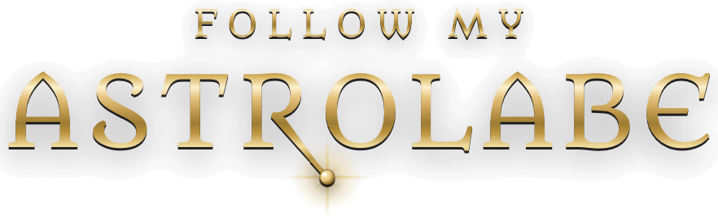
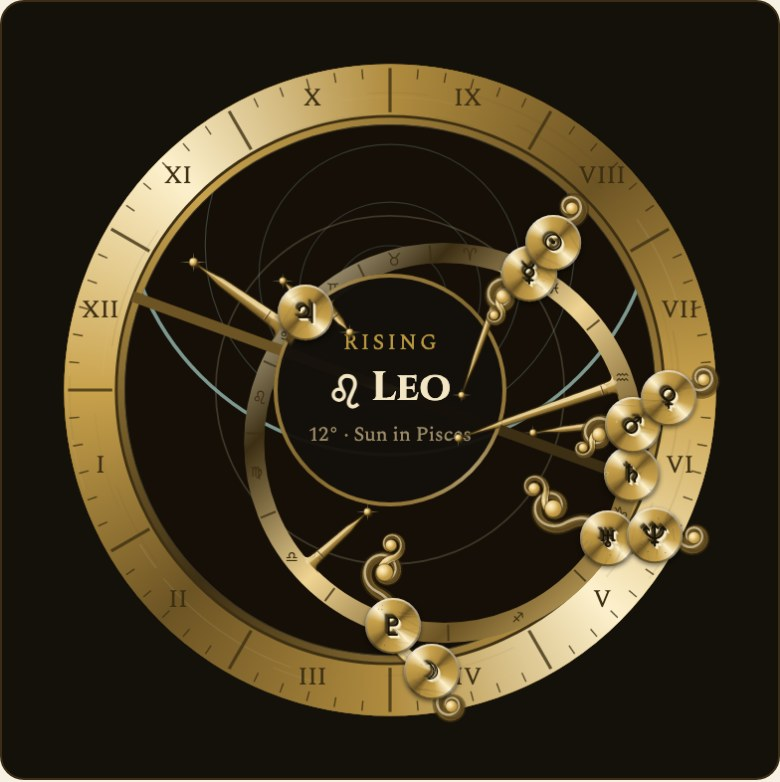

Your Path, Cast in Metal
Most horoscopes start from your sun sign. This chart starts from your rising sign instead, the sign coming up over the horizon at the minute and place you were born, and counts every house from it. That's how whole-sign houses work, the oldest way of reading a chart.
If the sign on your wheel isn't the one you expected, that's not a mistake. It's the more personal one.
An astrolabe is the oldest computer built for the sky — a brass instrument astronomers and navigators turned by hand for over a thousand years to read the positions of the stars.
Cast your chart and it's struck the way the instrument always was: the houses cut into the rim for the place you were born, the sky over your own latitude engraved on the plate, and every planet riding the rete at its true position. Tap a house or a planet to see what's there.
Cast Your Chart
Alongside the ten planets and the four angles, your chart places the North Node, Chiron, and Black Moon Lilith, each with its sign, its degree, and its house.
The planets in yours come from VSOP87, the planetary theory published by Bretagnon and Francou at the Paris Observatory — all but Pluto, which the theory doesn't reach and which keeps orbital elements of its own. The Moon comes from the published lunar theory that goes with it. Neither was typed in from memory and taken on trust — the planets are generated straight from the observatory's own data files.
Then we checked them against an independent ephemeris, a source with no reason to agree with us: nearly half a million positions across the last century, every planet sampled every day and the Moon more often still. Chiron crosses two planets' orbits, so no tidy formula holds it; its positions come from JPL's own tracking. Every body in your chart lands within a fiftieth of a degree. The Sun and the seven planets the theory covers land within a hundredth.
Purpose, love, friends, career, home, and spirit. Each one shows the sign and the planet that rule it, one word for what it asks of you, and a horoscope for today. That's free, and it's read from your whole chart rather than your sun sign alone — Purpose even spells its word out for everyone.
A subscription opens the rest: what each of the other five words is asking, and the weekly, monthly, and yearly readings for all six. It's $9.99 a month or $79.99 a year, there's no account and no password, and you can cancel any time.
A birth chart holds still inside the zodiac band while the actual sky runs past it, at anything from a day to a year each second. A line lights up the moment a moving planet makes an aspect to one in the chart, and when two planets meet, they pass each other the way they do overhead.
Or take a single day at the birthplace and watch the zodiac and the planets turn through the houses, minute by minute, pausing on the minute of birth. It all runs in your browser, on a tablet or a computer.
Your chart is worked out right in your own browser. Your birth date, time, and place are never sent to us or to anyone else, and even finding your birthplace runs on your device. There's no account to make and no password, and that holds for subscribers too: a subscription is an email address and a date, and nothing about your chart.
On an iPhone or iPad, open the chart page, tap Share, then Add to Home Screen. On Android, choose Install when your browser offers it. It opens like an app, and once it's there it works with no signal at all.
None of this predicts your life.
It describes you precisely enough to steer by — so the paths you choose are the ones most likely to fulfill you.
Every sign rendered in a warm, wax-resist batik style — digital art, created skillfully under the close, wash-by-wash direction of a real-life artist's eye, not left to run on its own. Worth exploring on their own, and available as real prints on real paper.
Astrology, Made Tangible.
Any of the twelve signs, printed to order on 170 gsm coated silk and shipped to you flat. Every print keeps the proportions the art was drawn in, so nothing gets cropped to fit.
Ships to addresses in the United States. Checkout is handled by Stripe, and each print is made and mailed by our print partner.
Studio New Moon is a member of Stripe Climate. On every print ordered, 5% of that Stripe transaction funds permanent carbon removal — not offsets.
See Our Stripe Climate Commitment